Tiles Survive · v2 · 15 Sep 2026 · schedules live on the alliance board in game
Made with AI — please double-check
This guide was assembled with an AI assistant from [S1L]'s own event notes and in-game screenshots taken by our members. AI can be wrong even when it sounds certain. The strip under each heading shows how solid that section is. If the game shows something different, the game is right — post a screenshot in alliance chat so it can be fixed.
Start here — the 5 minutes that matter
From playersTested in gameFrom the internetOfficial source15 Sep 2026
Almost everything in this game comes down to one idea: spend the resources you were going to spend anyway on the day they count two or three times. Not spending more — spending on the right day.
Every day, no matter what is running
Finish your daily tasks and collect the milestone chests.
Collect both free 50-stamina packs. Always — they are free and they expire.
Take the free gathering.
Give alliance help and donate to alliance tech.
These cost nothing, do not depend on winning anything, and are the most reliable points in the game.
Stamina and spy missions — do not just burn them
Stamina: collecting the two free packs is the daily habit. Spending extra stamina out of your backpack belongs on duel day 1, where stamina scores duel points — that is the day it counts twice.
Spy missions: the duel rewards them on days 1, 3 and 5 and on no other day, so there is no reason to run them in between. On any day, do the level 10 wandering infected — the first kill of the day carries the rewards that matter. Beyond that, either save your spy missions for the next scoring day, or run only as many as a special event actually needs.
The four mistakes that cost the most
Spending anything outside VS and Turbo Turtle. Resources, speed-ups, gear upgrades — all of it. On the wrong day the same spending scores nothing.
Treating Power Play as a third big event. It is a small bonus you take along when it happens to fit — not something to plan your week around.
Sitting unshielded on duel day 6. A weak unshielded base is free kill points for the enemy.
Attacking anything under a non-aggression pact or marked on the map. It damages our relationships — and we need allies for Arcadia. If in doubt, ask first.
If you only have ten minutes, work from the bottom up. The green band is the part nobody should ever skip.
One habit that separates good players from strong ones
Before you spend a stack of anything, ask: is there a day this week where this same action pays twice? Nine times out of ten there is. That is the whole game.
VS — the Alliance Duel
From playersTested in gameFrom the internetOfficial sourcePoint values read from in-game screens, Jun 2026
Six days, one theme per day, alliance against alliance. The weights add up to 13, so 7 wins the week — day 6 plus two middle days is enough even after a bad start. The order of the days never changes.
The order never changes. Day 6 carries four of the thirteen points — more than the first three days together.
Do everything the day offers
The list below is not a menu to pick from. What each item is worth depends on how often you can do it — what is small for one player is the main source for another. Do everything you can that day. We need every point.
Which weekday is which day
At the moment day 1 falls on Monday — so hero development lands on Thursday, troops on Friday, and the decisive combat day on Saturday. The alliance board in game is what counts; check there if a week looks shifted.
Building speed-ups · S-dispatch · A-delivery · power gained from building · diamonds from packs
3
Technology Research
2
Research speed-ups · spy mission · monster cells · monster EXP · battle medals · power from research · diamonds from packs
4
Hero Development
2
Legendary, epic and rare hero shards · wish, advanced and standard recruitment · hero skill manuals · diamonds from packs
5
Battle Preparation
2
Training troops, all tiers · spy mission · building, research and training speed-ups · power from building and research · diamonds from packs
6
Defeat Enemies
4
Killing enemy troops, scaled by tier. Your own losses feed the enemy. Peace shields are mandatory whenever you are not actively fighting.
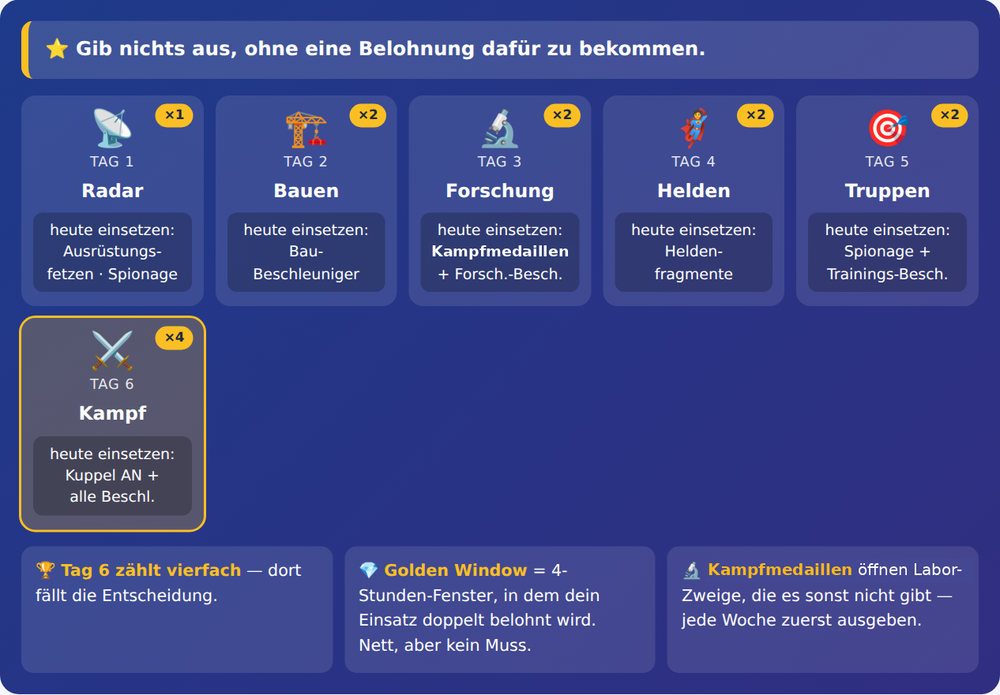
The duel cheat sheet as it was made for the alliance. German labels — the day order and weights are the same in every language.
The saving rule, in one sentence
Whatever you were going to build, research, train or upgrade anyway — hold it until its day, then finish it. Same resources, several times the points.
Exact point values per day (base values, before your own bonus)
These are base values. In game you normally see green numbers — those already include your personal research bonus, so two people doing the same thing correctly see different numbers.
Day 1 — Radar Training
Equipment scraps used
100 EP → +2,900 · 400 → +11,500 · 2,000 → +57,200 · 10,000 → +285,800 (≈29 per EP)
1 spy mission
+37,500
1 commander stamina
+300
100 food / 100 wood / 20 metal / 5 fuel
+1 each
Day 2 — Base Building
1 S-dispatch (Dire Dispatch)
+75,000 (once)
1 A-delivery (Doomsday Express)
+50,000 (once)
Speed up building by 1 minute
+250 (scales, unlimited)
+1 power from building
+9
The real lever here is building itself, not the two one-off dispatches. Speed-ups scale; the dispatches do not.
No task list. Points come from killing enemy troops (scaled by tier) and you lose points through your own losses. Shield discipline is what decides this day.
Milestone chests — thresholds and exactly what is inside
Daily tasks feed two things at once: alliance points for the day's race, and your personal milestone chests. The chests run from 50,000 to 5 million points. The number on a chest is its item value; what matters is what is actually in it.
The pattern worth knowing
Every third chest is the good one. The chests at 500k, 1.5M, 3M and 5M hold hero fragments, skill manuals, monster cells and equipment scraps. The ones in between are gems and resources. If you are deciding whether one more push is worth it, look at which chest is next.
Points
Value
What is inside
50k
25,500
100 gems · 50 battle medals · 20 wood · 20 food · 1 fuel · 4 metal (resource units of 10,000)
The research branches that raise your duel point bonus. This is why two players doing the same thing see different numbers.
Turbo Turtle — the 7 phases
From playersTested in gameFrom the internetOfficial source (in-game rules screen)All seven phase lists read action by action from the in-game phase screens, 15 Sep 2026
Turbo Turtle turns gear upgrades into event points. Every upgrade pays twice — your stats go up and you score. Blue scraps are worth roughly four times green ones.
Each phase scores a different list of actions. Not just a different topic — a different list. Phase 1 and phase 5 both want hero gear, but phase 5 also wants common parts and precision blueprints while phase 1 wants troop training instead. Improving gear (verbessern) and strengthening it (verstärken) are counted as two separate actions. Read the matrix, not the headline.
What changes from week to week is only how many phases run and which day carries which phase. The list inside a phase stays the same, and the exact point values appear in game on the day itself.
Colour marks the theme of a phase. The theme is only a headline — the exact actions differ, which is what the matrix below shows.
The full phase matrix
Column = phase. × = that action scores turtle points in that phase. Everything else is dead weight that day.
Action / item
1
2
3
4
5
6
7
Speed-ups
Building speed-ups
·
×
·
·
·
×
×
Research speed-ups
×
·
×
·
·
×
×
Hero gear and forging
Improve hero gear verbessern — raise the level
×
×
·
·
×
·
×
Strengthen hero gear verstärken — spend scraps
×
×
·
·
×
·
×
Reforge hammers Umschmiedehämmer
×
×
·
·
×
·
×
Reforge anchors Umschmiedeanker
×
×
·
·
×
·
×
Common parts Allgemeine Teile
·
·
·
·
×
·
×
Precision blueprints Präzisionsentwürfe
·
·
·
·
×
·
×
Monsters
Monster cells
·
·
×
·
·
×
×
Monster serums
·
·
×
·
·
×
×
Biogenic protein phase 3 excludes the exclusive kind
·
·
×
·
·
×
×
Heroes
Draw vouchers Ziehungsgutscheine
·
·
·
×
·
·
×
Advanced recruitment tokens
·
·
·
×
·
·
×
Standard recruitment tokens
·
·
·
×
·
·
×
Hero fragments legendary · epic · rare
·
·
·
×
·
×
×
Hero skill manuals
·
·
·
×
·
×
×
Troops and field
Train and upgrade troops
×
·
·
·
·
·
·
Kill infected and fanatics
·
·
·
·
·
·
×
Gather resources
·
·
·
·
·
·
×
Always
Diamond packs every phase, no exception
×
×
×
×
×
×
×
New: the 10M milestone and prestige weapons
There is now a milestone at 10 million points — confirmed on the event screen, where the ladder reads 10k / 1.0M / 2.0M / 3.5M / 5.0M / 10.0M. It gives a fragment. The chain from there: 5 fragments → 10 coins, and 20 coins → one new prestige weapon for a hero. Upgrading that weapon costs the same coins, so the coins stay useful long after the first weapon.
"Stage" means two different things — keep them apart
Rank tiers (5): Bronze → Silver → Gold → Diamond → Legend. These decide how rich your milestone rewards are.
Phases (1–7): these decide which actions score today.
How promotion, medals and milestones work
Promotion is by placement in your small group, not by a fixed score. At the end of each phase the best of the group move up: Bronze top 4, Silver / Gold / Diamond top 3. Everyone else holds or drops. Watch your group standing, not only your total.
Three leaderboards run at once: your group (4–5 players, decides promotion), your rank tier, and the overall event ranking which adds up all phases.
Race medals come from the levels you reach. In the shop: 20 medals buy one top gear item once; single medals buy a 1-hour speed-up or a supply box ×10.
Milestone ladder
10,000 / 1.0M / 2.0M / 3.5M / 5.0M / 10M points. Contents get richer with your rank tier (Bronze → Legend); the 10M step is the prestige fragment described above.
Reward
Bronze
Silver
Gold
Diamond
Legend
Gems
500
1,000
1,500
2,000
2,000
Hero EXP (10K)
100
140
150
200
200
Hero manual
40
60
70
80
100
Monster cell
2
3
4
4
5
The turtle emote unlocks from Gold upward. The event shop gives roughly one alloy box per week plus signature tokens and gear material.
Power Play — the 4-hour rounds
From playersTested in gameFrom the internetOfficial source (in-game rules and calendar)Rounds and calendar read directly from the game
A solo ranking event with rotating themes. Each round lasts 4 hours. Every day at 00:00 UTC twelve players with similar power-plant levels are drawn into a group, and you are ranked inside that group for the day.
Keep this in proportion
Power Play is a bonus you take along when it happens to line up with what you were doing for VS or Turbo Turtle anyway. It is not a third event to plan around, and it is not worth spending resources for on its own.
There is no schedule that fits everyone — open your own calendar
You are grouped by power plant level (seen in game: "Group: Level 26–Lv.27"), and which theme lands in which slot is not the same for everyone any more. There is no alliance-wide timetable worth posting.
Where to look: open Power Play and press the KALENDER button at the left of the banner. It lists Date · Activation time · Theme for the coming days and highlights the round running right now — six slots a day, four hours apart. That table is yours; read it there, not here.
The six rotating rounds
Hero Improvement · Settlement Building · Commander Collection · Technology Research · Gear Upgrading (equipment scraps) · Monster Growth
The six themes used to run on a single alliance-wide rotation anchored to 00:00 UTC, shifting one step each day. That no longer holds for everyone. Treat the in-game calendar inside the event as the only authority for your own account.
Do not confuse it with Turbo Turtle
Power Play runs in 4-hour rounds. Turbo Turtle runs in day-long phases. They are different events and they often reward the same action — which is exactly what makes a Golden Window.
Scoring detail, milestone chests and rank rewards
Point values depend on your level group — do not take another player's numbers as yours. The figures below come from three different groups, to show how far apart they can be.
Power Play medal ×1 · troop manual ×5 · 10K EXP ×5 · troop speed-up box ×5
2nd
troop manual ×3 · 10K EXP ×3 · troop box ×3 — no medal
3rd–5th
same items, decreasing amounts
Where to find it: world map → Events (top right) → drag the tab bar right to Power Play → the "?" button shows the rules, the internal Calendar button shows the round rotation.
The Golden Window
From playersTested in gameFrom the internetOfficial sourceReasoning from our own notes — not verified end to end
A Golden Window is a moment when one action pays into three things at once: the Alliance Duel day, the matching Power Play round or Turbo Turtle phase, and your actual progress.
Building speed-ups are the clearest case, but the same shape applies to scraps on day 1, research on day 3 and hero material on day 4.
The clearest example
Building speed-ups, finished on duel day 2 (Base Building), inside a Settlement Building Power Play round. One stack, three payouts. This is why hoarding speed-ups is not stinginess — it is the strategy.
If Turbo Turtle is also running that day and the phase is 2, 6 or 7, the same stack pays a fourth time. Those are the only phases that score building speed-ups — check the matrix before you spend.
The same logic applies to equipment scraps on day 1, research on day 3, hero material on day 4 and troop training on day 5. Two more overlaps worth knowing:
Cave Conquest also awards Alliance Duel points — so playing it on a duel day counts twice.
Stamina on duel day 1 feeds the Radar day and, when Sawblade Waltz is running, produces sawblades at the same time.
Which windows are open this week is announced on the alliance board in game. This page deliberately carries no dates.
Alliance and battle events
From playersTested in gameFrom the internetOfficial source (partly)Mixed — see each event
Oil Clash season event
What wins it: whoever holds the most deep-sea crude at the end. Everything resets at 00:00 UTC — yesterday's ownership protects nothing.
What every member should understand
We lose when we do not have enough anchors to attack together. Strength alone is not enough.
Half is enough — holding a spot past its threshold is wasted effort.
Small players should drop into anything unoccupied immediately. An empty slot produces nothing; an occupied one produces around the clock, even offline.
Softening a target counts as much as taking it. If you damage a spot, a big account can walk in afterwards with a single anchor. That saves exactly what we have least of.
There is no worthless attack. Even damage that does not kill a hideout still builds the alliance buff.
Points, thresholds, anchors and the night trick
How points are produced. A tower has several slots — one centre plus one or more cranes. A hideout is a single spot.
Slot
Output
Centre
+2 points / minute
Crane
+1 point / minute
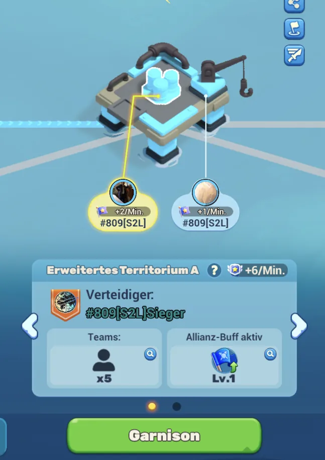
A territory header shows the sum, the slots below show +2 and +1 each with the holder's alliance tag.
The threshold formula
Daily threshold = points per minute × 720. Once we pass it, the enemy can no longer catch up that day — and from then on no more anchors go there. Whoever is already sitting stays (sitting is free), we simply stop attacking. If the enemy passes it first, attacking there is pointless.
Tower
Pts/min
Day max
Threshold
S tower
3
4,320
2,160
M/L tower
4
5,760
2,880
L/XL tower
6
8,640
4,320
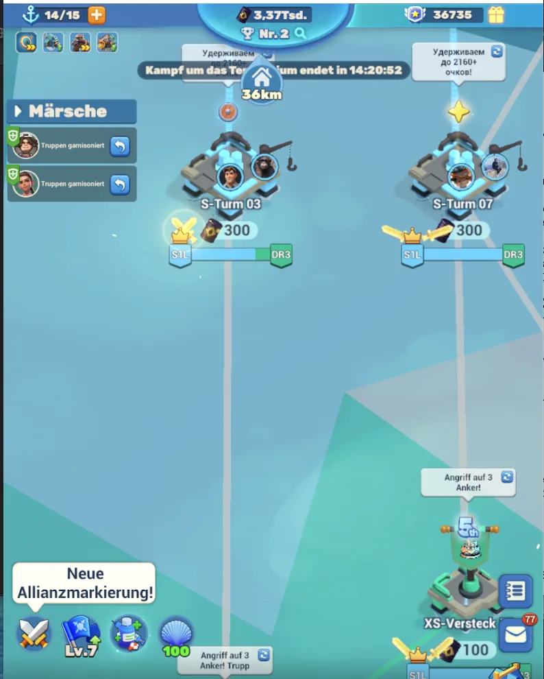
The in-game hint on an S tower says exactly this: hold to 2,160+.
Two hard limits
Connection rule: you can only attack what borders our own territory — the alliance has to advance as a connected chain. Occupied rule: you cannot slide into an occupied spot, you have to take it. That is why free slots are so valuable.
Staggered unlocking: towers carry countdown locks. Early on most of the map is closed; at the end everything opens at once and everyone fights simultaneously. That is the real reason for anchor discipline.
Anchor economy
Every attack costs one anchor. Resupply is +8 per day, +10 with the season pass, at 00:00 UTC. The cap is 15 — anything above that is lost.
Time (UTC)
Without pass
With pass
just before 00:00
7
5
after the refill
15
15
over the day
−8 → 7
−10 → 5
End the evening at 15, spend your daily allowance, and the refill puts you back at 15. Never carry unused anchors into the night — if alliance targets are done, put the rest into your own daily chests.
The night trick
After the 00:00 UTC reset everything is free and most opponents are asleep. Dropping into three territories right then collects all night without a single fight. Best effort-to-points ratio in the event, explicitly including small accounts.
Hideouts and the alliance buff
The in-game text says it plainly: improving alliance buffs by attacking hideouts, and those buffs also apply in PvP. Progress runs on total alliance damage to the hideout.
Buff
Lv.1
Lv.2
Hero attack in combat
+1,500
+3,000
Hero defence in combat
+300
+600
Hero HP in combat
+150,000
+300,000
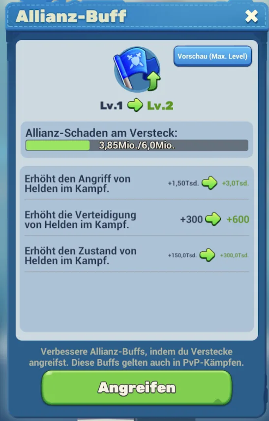
Buff progress is fed by alliance damage — which is why every attack matters.
Map markers — both mean the same thing for you
R4 marks two different situations: "do not attack, already ours" and "do not attack, belongs to another alliance". For members both mean the same: hands off. If in doubt, ask before attacking — a wrong attack costs an anchor and can break a deal.
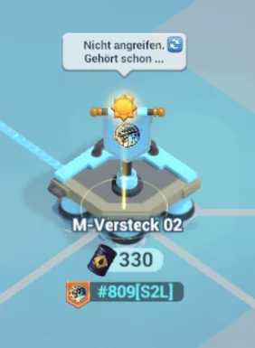
Marker: already secured
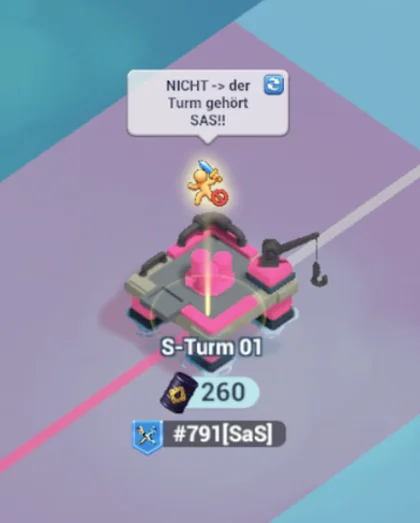
Marker: another alliance
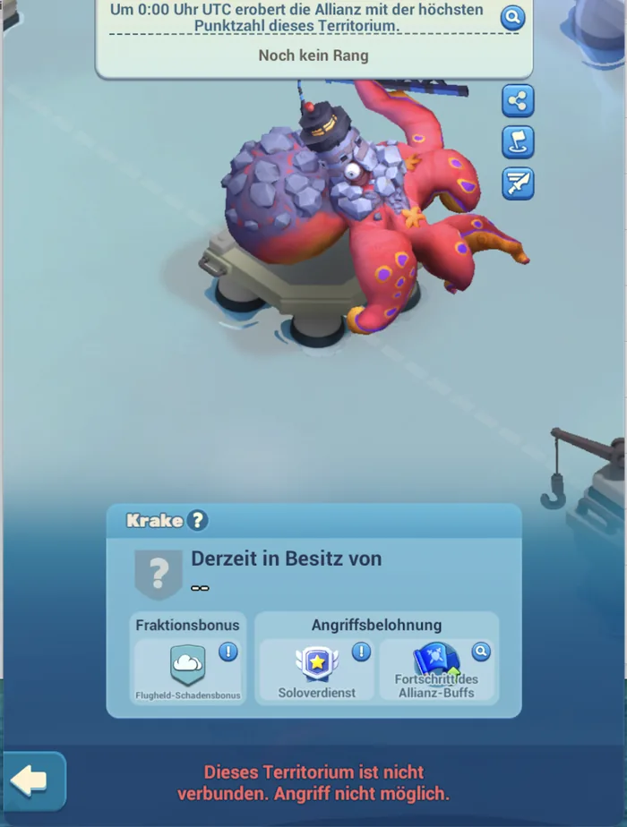
"Not connected" — cannot attack
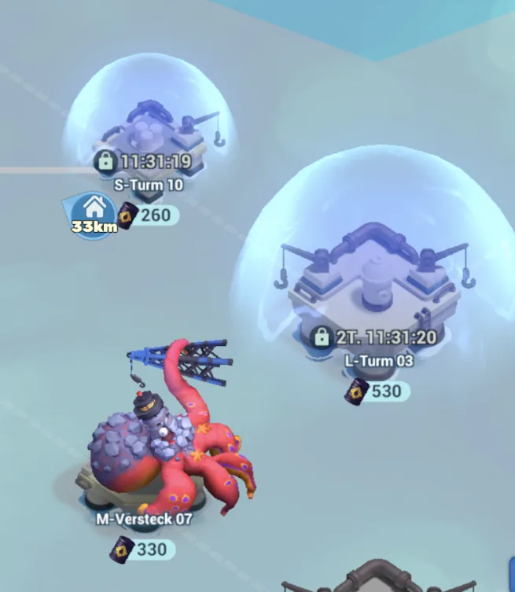
Locked towers with countdown
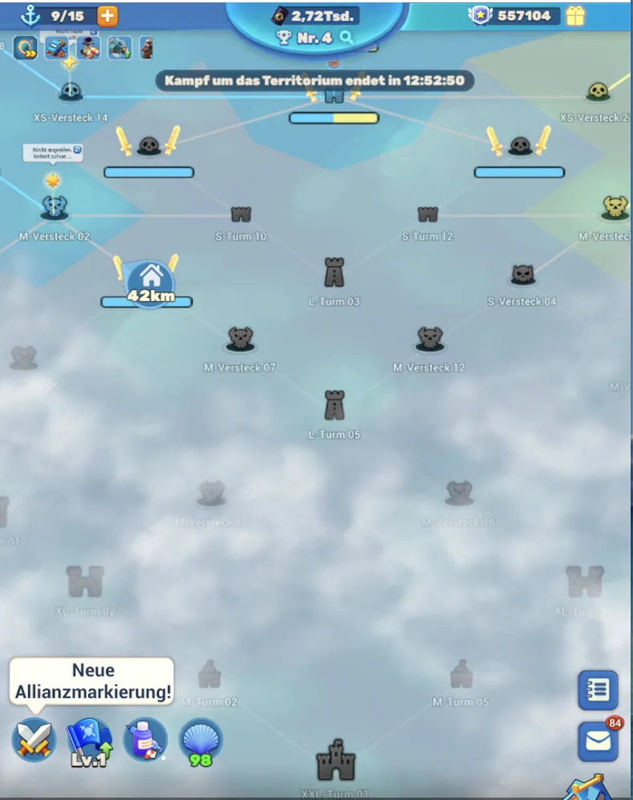
The map
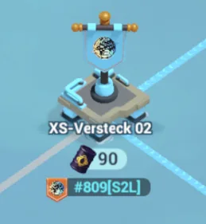
XS hideout
Two reward tracks — both pay, both worth taking
Alliance (crude): chests at 2.0 / 5.0 / 10.0 / 15.0 / 20.0 / 30.0k. Personal (merits): chests at 5.0 / 20.0 / 100.0 / 150.0 / 200.0 / 300.0k. Personal rewards do not depend on winning — always clear them.
Rank rewards at the end of the round
Place
Gold
Alliance silver (500)
Item
1h speed-up
1h healing
1
30,000
40
15
30
30
2
16,000
30
12
25
25
3
14,000
28
11
23
23
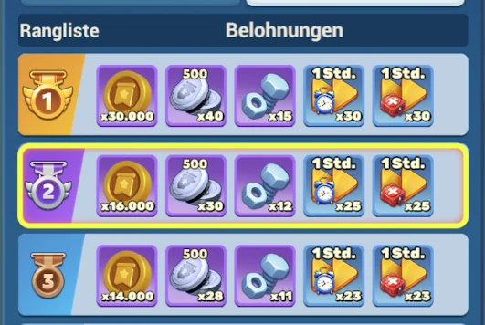
The middle item in the third column has not been identified yet — the icon is too small to name it with certainty.
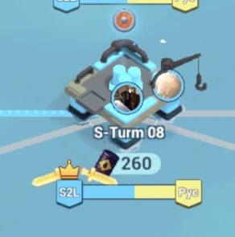
An S tower with its oil value
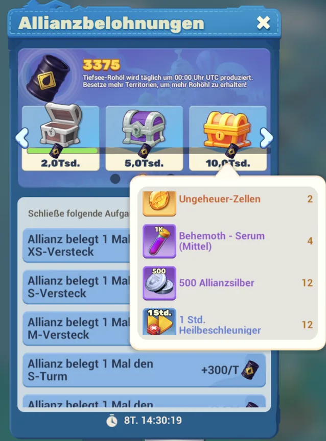
Alliance chests
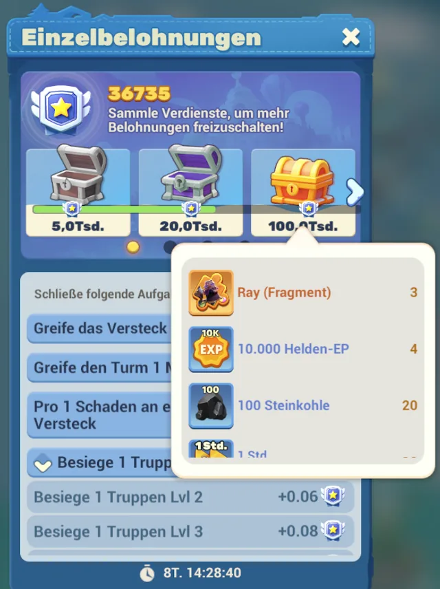
Personal chests
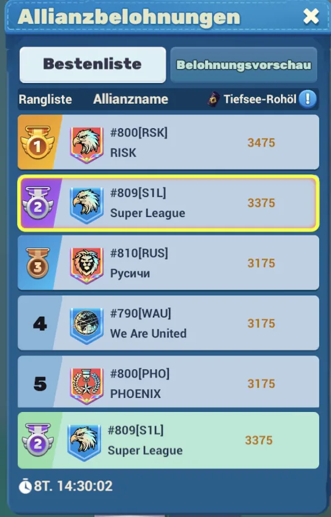
Leaderboard
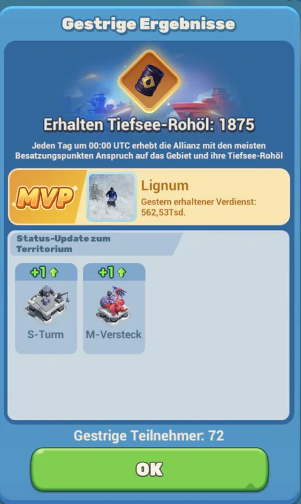
Daily result
Still open: thresholds for XXL towers and for hideouts (count the slots and multiply by 720), whether the oil value is fixed per territory type, and how many territories one player can hold at once.
Reservoir Raid 30 v 30, cross-state
What wins it: the alliance with the most alliance pure water when the timer ends. Water comes from first control of a building and from holding it. Kills give only personal water — holding wins, killing does not.
Alliance rule — this part is binding
[S1L] plays by coloured map zones, not by individual buildings. There are four teams — yellow (top left), orange (top right), red (bottom left), blue (bottom right) — plus solo fighters and substitutes. Every team has a leader.
What a team leader is responsible for:
Coordinating with the other team leaders — on Discord, or in chat when speaking is not possible for language reasons.
Opening the group and checking that everyone who should be there is there.
Asking whether everyone knows what to do — and assigning people if that is needed.
Stay in your assigned zone. Substitutes do not join on their own — they wait for the leaders' instruction in case someone drops out or has to be swapped. (Older standing rule, still worth knowing: substitutes join no earlier than 15 minutes after the start, because joining early takes a starter's slot.)
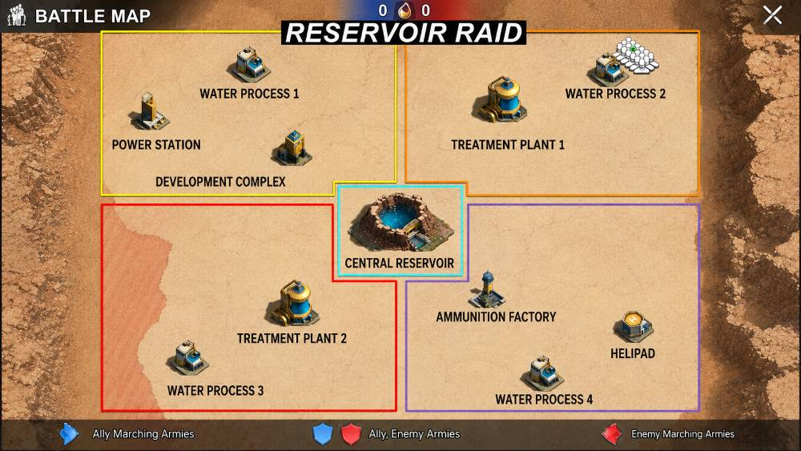
The four colour zones. Who is in which team changes per event and is announced before each raid — it is not listed here on purpose.
How a team can divide the work — an option, not a rule
How a team organises itself inside its zone is up to its leader — or to the members, who mostly know what they are doing. The following is one shape that works, not an instruction.
The four jobs in a zone:
Take our buildings in the zone.
Collect the water tanks in our quarter.
When a building is captured, the water it collected spreads around it — you can see the water on the map around that building. Someone always has to jump there and pick it up.
When the central building shows water and we have already collected a lot, everyone except the one person securing the main buildings jumps to the middle and collects the puddles.
An example role split inside a team:
Player 1 — stays at the water facilities at all times, even when everyone else leaves.
Player 2 — helps in the middle when needed, and back home when fights get bad.
Player 3 — jumps to the puddles.
Everyone else — fights in our zone.
Building values, rules and what to prepare
Building
Alliance water / min
Count
Central Reservoir
1,800
1
Large complex
1,200
2
Small facility
600
4
Munitions / Solar / Dev Compound / Helipad
240 each
—
Bonus buildings: Munitions Factory gives +20% attack and defence to everyone · Dev Compound sends an infected horde that weakens enemy defenders · Solar and Helipad give faster or free relocation.
Rules that catch people out: troops do not die, they are only wounded and heal for free — so attack aggressively. Never leave the canyon mid-raid, that locks you out for 10 minutes. Before the start bring all marches home and do not reinforce outposts. You get one free teleport every 10 minutes, each further one costs escalating gems — save them for flips and the endgame.
Say it in the reservoir chat the moment you need help or get attacked — that is what decides close raids, not individual strength.
Arcadian Conquest 3-hour siege
What wins it: holding central Arcadia plus four towers. The winner earns the right to appoint the governor. Scoring: 10,000 points for every 60 seconds you hold Arcadia or a tower.
Roles, the relocation window and the realistic goal
Relocation window — this one is critical. One hour before the start, settlements in the alarm zone are force-relocated. From 50 minutes before until the end, relocating is free but peace torches are disabled, and ones you activated earlier disappear.
Roles: only the strongest 5–8 hold the centre. Two or three per tower. The bulk runs rally waves in groups of five teams. Weaker accounts take side objectives — not the centre. Rotate garrisons every 30–60 minutes and put AoE heroes into the garrison.
Realistic goal: reach 1.5 hours of occupation or the longest total hold — not surviving three hours against nobody.
City Battle PvP
The one rule that saves you gems: only the first capture of a city gives the instant bonus. Retaking a city gives none — so do not burn gems on extra march slots for a recapture. It still helps the alliance through the growth bonus and duel points.
The two cases, step by step
Case A — city with monsters. Everyone goes for the small ones first: one march each onto a free small monster, so points spread across the alliance. The big centre and the middle ones only on the commander's call. Once the big one is down to 25%, everyone goes in together.
In more detail: the small ones can already be killed before the event. When the small one showing a percentage hits 50%, new small ones spawn — so clear small ones first, then that one. Then the medium-small ones until the city is at 75%, then down to 50%, and so on. From 25% and once the small ones are gone, the centre.
Case B — city held by an enemy alliance. Everyone hits it together until it is ours, then everyone sends troops in to defend for 30 minutes. After that it is ours.
Always: come to the rally point when R4 calls, and keep watching alliance chat — plans change on the fly.
Cave Conquest also gives duel points
Defeat tunnel puppets, collect sandworm eggs, earn tunnel points and alliance duel points. One-hour blocks alternate between clearing puppets and taking the tunnel. Each alliance can control only one tunnel at a time.
Rewards and the thing people get wrong
Personal milestone chests at 15,000 (manual ×2, 5-min speed-up ×5, supply box ×30), 30,000 (supply box ×40) and 60,000 (coin, manual ×2, hero figure ×1, speed-ups). Control rewards are distributed by R4 and above.
Common misunderstanding: the sandworm eggs are a points collectible, not something that hatches into a behemoth. Behemoths come from cells and serum, not from caves.
Underground Goldmine cross-state
Garrison mine tiles to gather gold; others can raid you and you can take revenge. Mines run level 1–6; levels 5 and 6 have a minimum recall time and multi-squad garrisons. Secure rare high-level mines early — it is first come, first served. Do not defend a low-value mine at the cost of two teleports.
Solo and growth events
From playersTested in gameFrom the internetOfficial source (partly)Mixed — see each event
Lost Frontier 10 tries a day
Beat 30 normal monsters per difficulty to unlock the next one: Easy → Normal → Hard → Insane → Hell. You get 10 attempts per day, reset at 00:00 UTC. Every fifth monster a supply hoarder appears — beat it with a raid. Use your strongest team, not a fixed formation.
The mistake
Burning attempts on a difficulty you cannot clear. You only unlock the next tier by clearing all 30. Raise heroes first, then push.
The help mechanic — the most common question
Asking for help happens before the raid starts, as an invitation; the rally only appears after the start. Two separate steps.
Find it via the green Help button in the event, or the small double arrows (») at the right edge of the chat banner — not by tapping the banner itself. To help others, look under the Event tab in the rally menu, not among normal rallies.
Honor Expedition resets Tue / Thu / Sat
Three battlefields, each giving +20% to one hero class: Mountain Citadel → Valor heroes, Howling Sands → Rogue heroes, Azure Apex → Flight heroes. Complete the challenge on each for glory coins.
Two rules that decide your whole cycle
You pick a difficulty once and cannot change it. Pick the highest you can clear safely — overreaching wastes the cycle.
Each hero can only be used on one battlefield per cycle. Spread them deliberately.
Mountain Citadel is the key: the other fields are gated behind its progress — Azure Apex stays locked until Mountain Citadel difficulty 13 is done. Push Mountain Citadel first. Spend glory coins on the best available gear rather than scattering them.
Reward table by difficulty
The pattern is identical on all three battlefields, so the table applies by tier. Coins rise by +260 per tier up to T23, then +130 per tier. Tiers 10 and 11 are calculated, not photographed.
Tier
Glory coins
Chest A
Chest B
Scraps
Supply box
1
2,080
5
1
62
25
5
3,120
5
5
120
25
9
4,160
2
5
178
25
13
5,200
2
5
224
50
20
7,020
5
5
247
50
25
8,060
5
3
268
75
32
8,970
5
1
310
100
70
11,830
6
6
416
175
Chest A is the rare honor chest, chest B the premium one; their drop tables are fixed regardless of tier — only the quantities change. Equipment scraps give +100 EP when upgrading hero gear. A supply box is 10,000 units of one resource.
Ghoulion Pursuit 30 minutes
An alliance boss rally where your personal damage decides your reward bracket. The event was cut from 24 hours to 30 minutes and there is no limit on simultaneous rallies — so everyone who can lead one leads their own instead of waiting. Maximum hits per minute is the whole game here.
Before it starts
Switch to single-target and boss-damage heroes, signature weapons and damage gear. Take the tank gear off.
Hold your damage buffs and attack consumables for these 30 minutes only.
Donate traps before the event — it raises the rewards.
Reward brackets
Personal, by your own damage
Damage
Recruit marks
Parts
Scraps (+400)
1–3.99M
1
30
10
10–19.99M
1
90
15
20–39.99M
2
120
18
40–79.99M
2
150
20
80–119.99M
2
180
21
120–159.99M
2
200
22
160–199.99M
3
220
23
200–239.99M
3
240
24
240M and above
3
260
25
Alliance, by total damage
Total
Scraps
Alliance honor
1–99.99M
3
300
400–999.99M
6
600
1.0–1.59B
7
700
2.0–2.39B
9
900
3.20–3.99B
12
1,100
4.0B and above
15
1,200
The top player's damage multiplies the alliance reward: ×1 up to 99.99M, ×2 to 159.99M, ×3 to 239.99M, ×4 from 240M. So pushing the best player higher lifts everyone.
Sawblade Waltz hero event
Spend 50 stamina in the wilderness to get one sawblade. Use sawblades to summon marked elite infected, raid them with allies, and you have a chance at Lucky's shards. Enough shards unlock her.
The overlap worth planning around
Duel day 1 (Radar) rewards spending stamina. That is the same stamina you need for sawblades — so on Radar day, spend it deliberately and it counts twice.
Shard milestones sit on roamer levels 4, 7, 10, 13, 16, 19, 22, 25, 28 and 30. If you want Lucky, chase those. Raids are an alliance matter — say when you summon so it does not go to waste.
Progression Exchange 5 free swaps
A limited-time event that lets you move progress from one hero to another instead of losing it. Two modes:
Swap skill levels between two heroes — their maximum skill level has to be identical.
Swap prestige gear levels between two heroes.
Why this matters more than it looks
This is the one mechanic that undoes a bad investment. If you levelled skills or prestige gear on a hero you no longer field, the exchange moves that work onto the hero you actually use. You get 5 free attempts — do not let them expire, and think before you spend one, because the swap goes both ways.
Doomsday Express 4 + 4 per day
Send your own trucks and raid other players' vehicles. Four send attempts and four raid attempts per day; delivery takes roughly 2.5 to 3 hours. Collecting a finished delivery does not cost an attempt.
What you get
Your own delivery, collected: 800,000 food · 800,000 wood · 160,000 metal · 40,000 fuel · 15-min speed-ups ×3 · medals ×8 · cells ×2.
Raid rewards by class: A tends toward premium items, B toward large resources, C mostly speed-ups. The preview shows the defender's power before you commit — check it.
Heroes and troops
From playersTested in gameFrom the internetOfficial sourceFrom our own alliance channels, Sep 2026
This section comes from members of the alliance sharing what they found. It has not been re-checked screen by screen, so treat it as good advice rather than confirmed numbers.
Three heroes whose prestige gear helps everyone
The prestige equipment of Rosi, Jacob and Chiron improves all heroes, not just the hero wearing it. Take that into account when you plan which prestige gear to upgrade first — spending there pays across your whole roster.
Chiron's passive works on the whole march
Chiron's passive Penetrating Resonance affects all allies and raises their attack and defence. "Allies" here means the troops in the march, not other players.
Lucky reduces what the wilderness costs you
Lucky's passive Wild Hunt lowers stamina consumption in the wilderness. Reported values: at level 16 it saves 8 on fanatics and 9 on infected; at level 21 it saves 9 on fanatics and 7 on infected.
Upgrade her on the hero development day — the same action then scores duel points as well.
Turning an SR hero into an SSR hero
In the ship seasons an SR hero can be upgraded to SSR. The hero has to be at 10 stars first. In the current season that hero is Lucky; season 2 is expected to be Sarge.
After the upgrade the hero restarts at 5 stars and can be taken back to 10 with epic hero shards — but at double the quantity. Total needed: 2,520 fragments. Worth knowing before you commit, because it is a long road.
A line-up reported from another state second hand
Passed on from an experienced player on state 48, so not our own measurement: main team Chiron, Layla, Candy, Jacob, Becca; second team Ray, Tarzan, Tara, Rosie, Nikola. Reported to reach roughly 250 million hero strength per march. Useful as a direction, not as a target to copy blindly.
Troops — and a warning about dismissing them
Duel day 5 is the troop day: you score as long as you have the space and the speed-ups to train.
Read this before you dismiss troops to free up space
You reach your troops through the profile window, bottom left. Troops in the settlement can be reduced there.
The settlement window pre-selects every troop for dismissal. Change the number by hand and dismiss in small steps. Dismissed troops lower your combat strength in the alliance ranking — this is one of the few actions in the game you cannot undo.
Gear and reforging
From playersTested in gameFrom the internetOfficial source (in-game screens)Read from the German game interface, Aug 2026
Reforging rerolls the special values on a piece of gear. The interface shows you the probability before you commit, and the result can be better or worse than what you had. Check the value pool first — the screenshots below show where those numbers are.
How to reforge without wasting it
The value has to fit the hero. An excellent value for precision shooters does nothing on a guardian hero. Rare values are worth more than common ones — but only on the right hero.
Keep rolling until the result is better than what you had, then save. After saving you can carry on rolling and hope for something better still, without risking what you already banked.
The probabilities — and the one rule that follows from them
Each reforge draws from a value pool. The chance of landing a higher tier is:
Common
45 %
Exquisite
30 %
Epic
20 %
Legendary
5 %
The game states that the more often you reforge a piece, the higher its chance of getting higher-tier values. So rolling is not a coin flip you repeat — it improves. That is the mechanical reason behind "keep rolling, save when it is better, then roll on".
Golden gear
Golden gear can be strengthened with further golden gear. The details — how many pieces, how reforging interacts, and how reforge anchors are used — are being worked out in the alliance and will follow here.
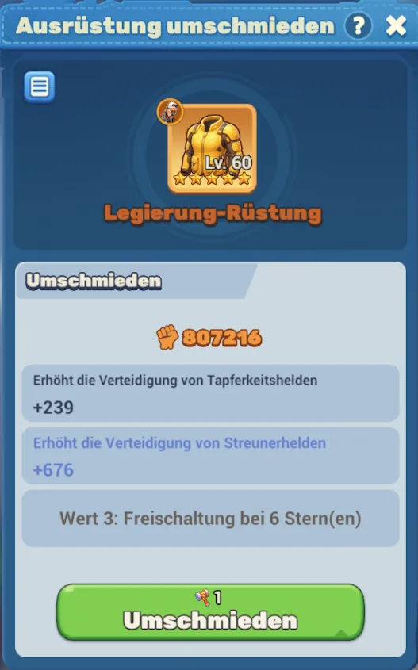
Where reforging starts
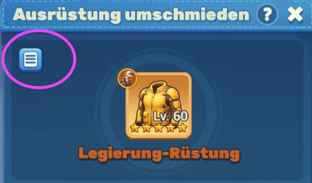
The probability menu
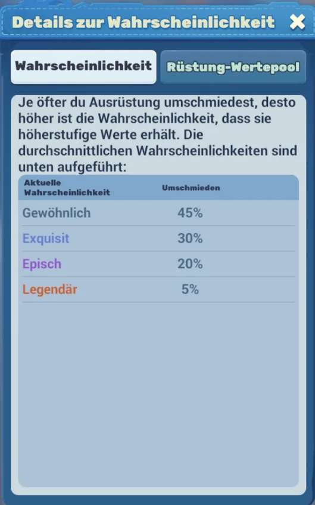
Probability display
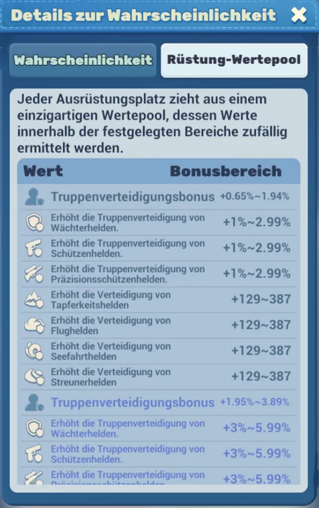
The value pool you are rolling from
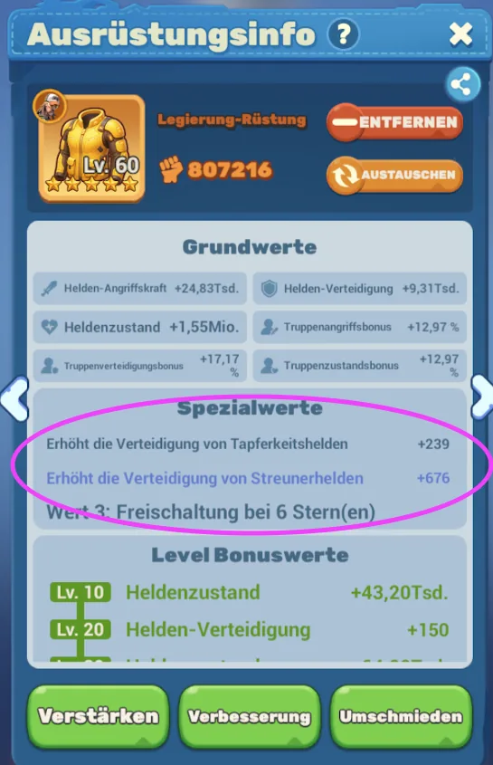
Special values explained
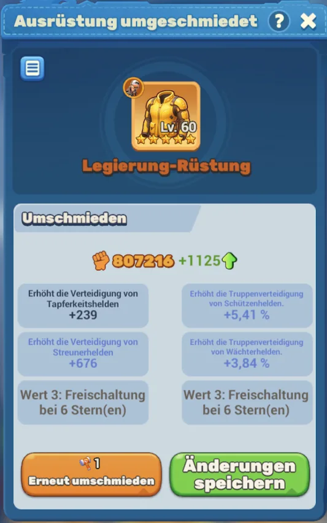
A result that improved
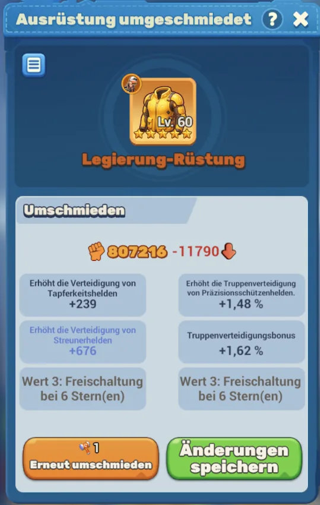
A result that got worse
Button labels differ between languages — the screenshots come from the German interface.
Where to look things up
From playersTested in gameFrom the internetOfficial sourceAll sources opened and checked 15 Sep 2026
24Gaming4Fun — YouTube
youtube.com/@24Gaming4Fun
+ GOOD FOR
New updates and seasons, usually within days.
Seeing an event played instead of described.
− WEAK AT
Looking one thing up quickly — it is video.
One player's opinion, not verified data.
dandangers.ru — another alliance's wiki (Russian)
dandangers.ru
+ GOOD FOR
The deepest written guides anywhere — 18 of them plus data tables.
Long-term free-to-play build planning.
− WEAK AT
Russian only — use your browser's translate button.
No update dates, and it reflects their state, not ours.
TilesSurvive.net — fan database
tilessurvive.net
+ GOOD FOR
Numbers: hero EXP, star tables, skill books, VIP points.
Two working tools: event helper and speed-up calculator.
− WEAK AT
No update date anywhere, so values may be old.
Faction names differ from the ones in game.
Official Tiles Survive Discord
discord.com/invite/tilessurvive
+ GOOD FOR
Getting one specific question answered fast.
Patch news arrives there first.
− WEAK AT
Answers are unverified opinions.
Very busy — things scroll away.
PocketGamer hero tier list (editorial, not players)
pocketgamer.com/tiles-survive/tier-list/
+ GOOD FOR
A first orientation if you are new.
It states its date and game version — most pages do not.
− WEAK AT
An editor's opinion with no method shown.
No season or time-limited content.
Do not use these — and do not buy from them
TOPUPlive, Packsify, LDShop, LootBar, BuffHub, GamsGo and similar sites all sell in-game currency. Their "guides" exist to bring you to their checkout.
More importantly: FunPlus's own terms say item licences "may only be purchased from us or our representatives through the Games or as otherwise expressly authorised", and reserve the right to reverse payments and close accounts. Buy waypoints only in the game or at the official FunPlus top-up centre. A few euros saved is not worth your account.
How to read the confidence strip
Every section starts with a row of ticked boxes. It tells you where that information comes from, so you can judge it yourself instead of trusting it blindly.
From the internet — found on guide sites. Useful, but nobody checked it for us.
Official source — from FunPlus, patch notes, or a rules screen inside the game.
From players — from people who actually play, including our own members.
Tested in game — somebody opened the screen and confirmed it. The strongest tick.
More ticks means more solid. A section with only the first box ticked is still worth reading — it just means: try it, do not bet the week on it.
Help fix this page
If you open a screen in game and the numbers differ from this page, post a screenshot in alliance chat. That is how a box earns its "tested in game" tick. There is a list of open questions in every detail block — corrections are more welcome than praise.